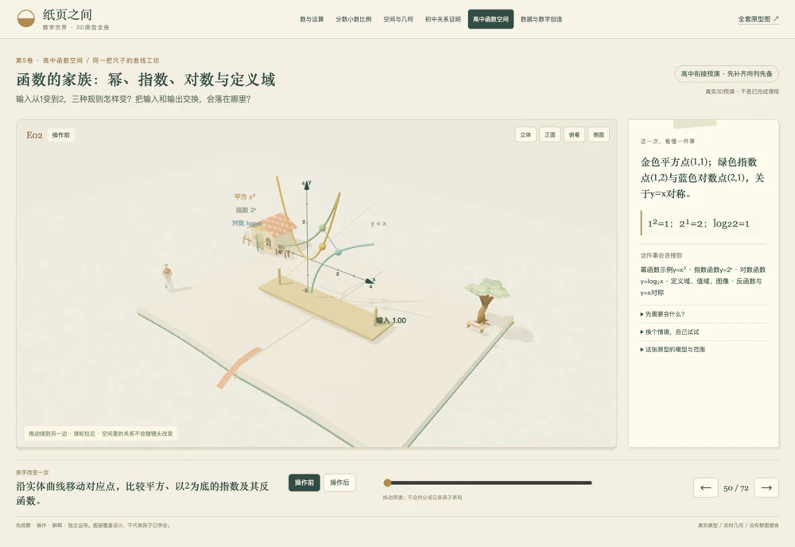
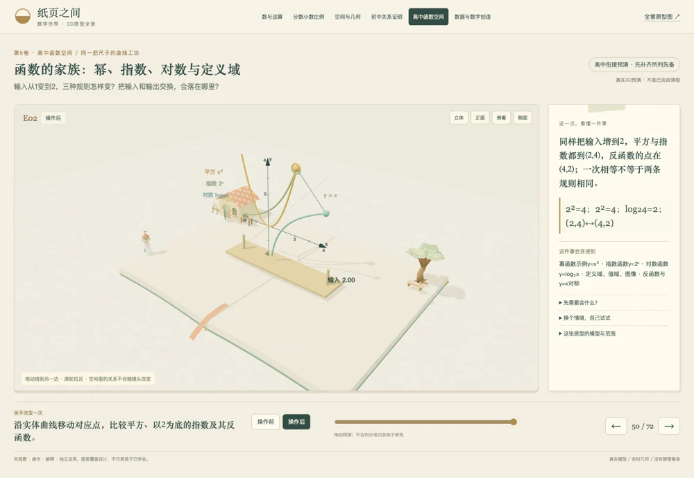
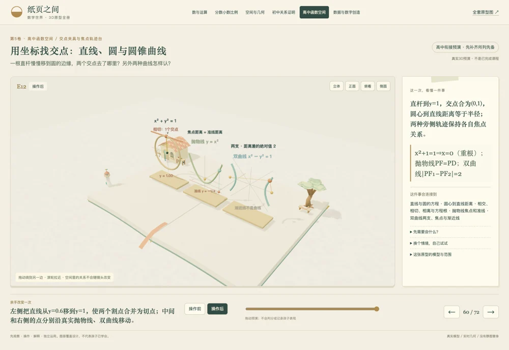
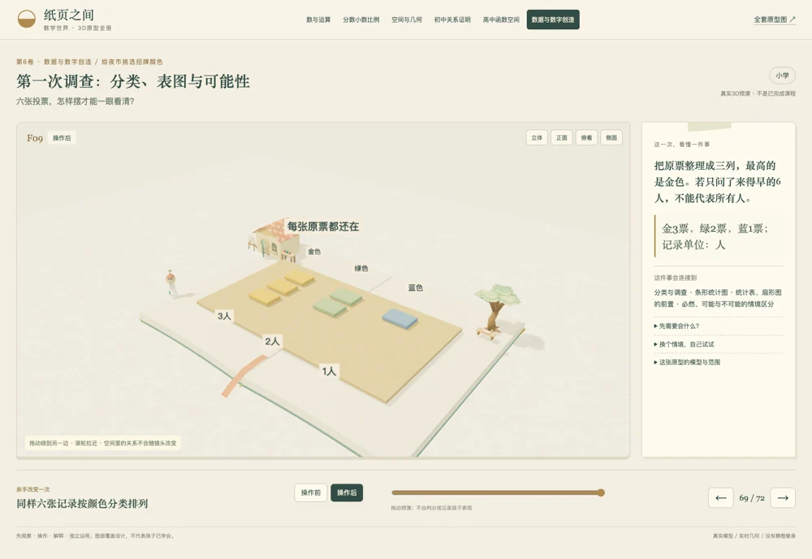

这节你要做什么
朋友要来野餐了，桌上有些位置还没杯子。从篮子里拿一只，放到空桌垫上，看看怎样让每个人都有杯子。
操作前 · 桌上七只，备用盘三只；每个位置只放一只。
操作后 · 十个位置各有一只杯子，备用盘空了。
知识、先备与独立验证
想明白：十个位置已经放了七只杯子，还要从旁边拿几只？
动作细节：把备用托盘上的三只杯子逐只放进空位。
知识：一一对应 · 数的组成 · 凑十 · 加法 · 补足与比较
先备：认识一只杯子 · 能逐个数到十
换个情境：换成十二个位置、已有八只杯子，先预测再摆，不沿用本场的三个。
位置圈不是另一只杯子；本场只演示补足，不含全部加减应用。 本场是一个主机制的三维预演，不代表全部课时或独立掌握；迁移题尚未做成可判分任务。
这节你要做什么
把十块百格板叠成一块大积木，先猜里面的小单位会不会变多。拖动进度条叠起来，再从不同角度核对。
操作前 · 十块百格板，每板十行十列；板厚也是一个小单位。
操作后 · 长宽高各十个小单位，仍是一千个单位。
知识、先备与独立验证
想明白：十块百格板叠成一块大积木，里面的小单位会变多吗？
动作细节：把十块百格板叠成一块含一千个小单位的大积木。
知识：个十百千万 · 十进位值 · 整数读写 · 单位重新分组 · 数的比较与估算
先备：十个一组成一个十 · 十个十组成一个百 · 认识行列
换个情境：说明二千三百零四里的零保留了哪个位置；再用十块千块解释一万。
实物主机制是百到千；个、十、万由概念和迁移衔接，不声称已演完全部数位。 本场是一个主机制的三维预演，不代表全部课时或独立掌握；迁移题尚未做成可判分任务。
这节你要做什么
把28块和17块合在一起，想一想散块够不够再扎一捆。拖动进度条整理，看看新的一捆从哪里来。
操作前 · 二十八是二十和八；十七是一十和七。
操作后 · 原来的三捆加新的一捆，还有五个散块。
知识、先备与独立验证
想明白：二十八块和十七块合起来，散块怎样重新打成十个一捆？
动作细节：把八个散块和另两块排成一捆，保留其余五块。
知识：整数加法 · 进位 · 口算与笔算联系 · 十进分组 · 加法交换结合
先备：十个一等于一个十 · 认识二十八和十七的组成
换个情境：用三十六加二十七，说明哪十个散块形成新的一捆，再用减法检查。
捆带不是额外的量；进位不是凭空增加一块。 本场是一个主机制的三维预演，不代表全部课时或独立掌握；迁移题尚未做成可判分任务。
这节你要做什么
从42块里拿走18块，但桌上只有两个散块。拖动进度条拆一捆再取走，核对取走的和留下的是否仍合成42块。
操作前 · 四捆和两个散块，总共四十二。
操作后 · 取走区十八块；留下两捆和四个散块。
知识、先备与独立验证
想明白：四十二块要拿走十八块，只有两个散块时怎么办？
动作细节：拆开一捆，把一整捆和八个散块移到取走区。
知识：整数减法 · 退位 · 减法的逆运算 · 单位分解 · 整数四则检查
先备：一个十可以拆成十个一 · 理解取走与剩余
换个情境：五十三减二十六时，画出拆捆后的数量，再解释为什么不是减去两捆六块后直接写三十七。
取走的十八块仍可看见；颜色只标去向，不改变数量。 本场是一个主机制的三维预演，不代表全部课时或独立掌握；迁移题尚未做成可判分任务。
这节你要做什么
清点四盘果子，每盘六颗，先想一个不用从头逐颗数的办法。拖动进度条排成整齐行列，核对总数有没有改变。
操作前 · 四盘，每盘六颗，不能漏掉某盘的一部分。
操作后 · 四行六列，仍是原来二十四颗。
知识、先备与独立验证
想明白：四盘果子，每盘六颗，换成整齐的行列会改变总数吗？
动作细节：把四个小组展开成四行，每行六颗。
知识：整数乘法 · 等组 · 阵列 · 乘法口诀 · 交换律 · 拆分口算
先备：能数清每组 · 认识相同数量的组
换个情境：把五组七颗拆成五组五颗和五组两颗，自己检查两部分是否都包含五组。
交换乘数保留总量，但组数和每组数量的叙述需要随之改变。 本场是一个主机制的三维预演，不代表全部课时或独立掌握；迁移题尚未做成可判分任务。
这节你要做什么
算清这块23厘米长、14厘米宽的板有多大。拖动进度条拆成四块，逐块指出它的面积，检查有没有漏算。
操作前 · 整块长二十三厘米、宽十四厘米；每个小格是一平方厘米。
操作后 · 二百、三十、八十、十二四块都属于原来的面积。
知识、先备与独立验证
想明白：二十三厘米乘十四厘米的板，拆成四块后有没有漏算一块？
动作细节：沿二十加三、十加四的边界把四块分开。
知识：多位数乘法 · 分配律 · 部分积 · 面积与平方单位 · 乘法估算
先备：矩形面积 · 一平方厘米 · 十位与个位 · 两位数拆分
换个情境：独立拆算三十二乘十六，先估范围，再解释四块分别来自哪两条边。
分开后的缝隙不是新增面积；展示的是面积模型，不是长度23加长度14。 本场是一个主机制的三维预演，不代表全部课时或独立掌握；迁移题尚未做成可判分任务。
这节你要做什么
把156颗按每盒12颗装好，先估一估需要多少盒。拖动进度条看分装，再检查每盒数量和有没有剩下。
操作前 · 料盘里一百五十六颗，空盒每盒装十二颗。
操作后 · 十盒加三盒；十三盒每盒都是十二颗，没有余下。
知识、先备与独立验证
想明白：一百五十六颗，每盒恰好十二颗，能装多少盒？
动作细节：先装十盒一百二十颗，再把剩下三十六颗装成三盒。
知识：整数除法 · 按份分 · 平均分 · 长除法 · 商与余数 · 乘除互逆
先备：十二颗算一组 · 十个十二是一百二十 · 剩余量
换个情境：一百五十八颗仍每盒十二颗，怎样说明十三盒和余下两颗？再比较平均分给十二人是什么问题。
主机制是按每盒12颗分组；平均分给12人的每人13颗是另一种分法，本场不混称。 本场是一个主机制的三维预演，不代表全部课时或独立掌握；迁移题尚未做成可判分任务。
这节你要做什么
每份先放8块再添4块，做三份后总共拿走6块。拖动进度条按这个顺序整理，说清括号为什么要放在那里。
操作前 · 三份都包含八块与四块；六块是从三份总量中取走。
操作后 · 三份原有三十六块，取走六块，剩下三十块。
知识、先备与独立验证
想明白：每份八块再添四块，做三份后共拿走六块，还剩多少？
动作细节：先在每份里合并八和四，再从三份中各取走两块。
知识：整数四则混合 · 括号与运算顺序 · 合理估算 · 大小比较 · 应用题 · 逆运算检查
先备：等组乘法 · 合并和取走 · 括号表示先组成的一份
换个情境：每份五块加三块，做四份再取走七块，先用实物关系写式子，再检查结果应在二十和三十二之间。
8 + 4 × 3 − 6是另一个关系，不能靠交换操作顺序冒充同题。 本场是一个主机制的三维预演，不代表全部课时或独立掌握；迁移题尚未做成可判分任务。
这节你要做什么
比较八颗和五颗，找出短的一排还差多少。拖动进度条一一配对，把没有配上的部分与式子里的x对起来。
操作前 · 两排各有八颗和五颗，暂未对齐；x表示要补足的颗数。
操作后 · 五对都配上，长排另外三颗；比较、补足和求未知数对应同一个差。
知识、先备与独立验证
想明白：八颗比五颗多几颗？五颗还差几颗到八颗，是不是在问同一个差？
动作细节：把两排的一端对齐，一一配对，再指出没有配对的三颗。
知识：比较与补足 · 加减关系 · 未知量 · 字母表示数 · 等式 · 简单方程 · 相等关系
先备：一一对应 · 两排使用同一种计数单位 · 等号两边表示相等的量
换个情境：用十二颗与七颗分别提出“多多少”“还差多少”和“7+x=12”；再解释x+7=12与12−x=7。
补足关系由配对后的空位表示，本场不把长排三颗搬走后仍谎称长排有八颗；乘除未知量留迁移。 本场是一个主机制的三维预演，不代表全部课时或独立掌握；迁移题尚未做成可判分任务。
这节你要做什么
先看左边：把306块分三份，检查为什么每份的十位要写0。再看右边的26支笔，区分装满几盒和带走全部要几盒。
操作前 · 左侧三块百板和六个一；右侧二十六支笔，每盒最多四支。两边是独立问题。
操作后 · 每份一百、零十、二个一；右边六盒装满、另有两支，全部带走需第七盒。
知识、先备与独立验证
想明白：三百零六块分三份为什么每份是一百零二？二十六支笔每盒四支，带走全部要几盒？
动作细节：左侧每份分一块百板和两个一；右侧把二十六支笔装进六个满盒和一个未满盒。
知识：商中间的0 · 数位占位 · 整数除法 · 有余数除法 · 余数小于除数 · 按情境向上取整 · 满盒数与所需盒数
先备：百十个的组成 · 每份相同 · 每盒容量是上限 · 份数与每份量不是同一单位
换个情境：408块平均四份，每份为何不是12块？29支每盒4支，分别回答满盒数、余下支数和至少所需盒数。
商102中的0表示没有整十，不是可以省略的数字；“6余2”的2是支，不是2盒，未满盒仍占1盒。 本场是一个主机制的三维预演，不代表全部课时或独立掌握；迁移题尚未做成可判分任务。
这节你要做什么
从10点45分再等35分钟，先猜过了整点会到哪里。拖动进度条看钟针和时间线，别把分钟按钱币的进位办法算。
操作前 · 钟是10:45；旁侧100枚一分币与一元参考币等值，但不是钟表刻度。
操作后 · 经过11:00后又走20分钟，钟到11:20；钱币一元是一百分币，规则不同。
知识、先备与独立验证
想明白：十点四十五再过三十五分钟，分针经过整点后到哪里？能按钱币那样逢一百再进吗？
动作细节：转动真实钟盘的分针和时针，在时间线上先走十五分钟，再走二十分钟。
知识：时刻与经过时间 · 跨整点加减 · 六十分制 · 元角分换算 · 钱币单位 · 质量单位与换算 · 复名数
先备：时针分针的作用 · 每个小刻度一分钟 · 时刻不是一段时长 · 分钟与分币不同
换个情境：独立求11:50再过25分钟；把2元5角换成分币；用称重说明750克加500克为何是1千克250克。
元到分币相差100倍，但元到角、角到分币相邻均为10倍，不把钱币笼统叫百进制；称重仅列迁移，未模拟天平。 本场是一个主机制的三维预演，不代表全部课时或独立掌握；迁移题尚未做成可判分任务。
这节你要做什么
温度从零下2度升到零上3度，先沿温标找出起点和终点。拖动进度条跨过零点，数清一共升了几格。
操作前 · 起点在0°C基准下面两格；每一格代表1°C的温差。
操作后 · 先升两格到零，再升三格到三度，共升高五度。
知识、先备与独立验证
想明白：从零下二度升到零上三度，为什么升高的不是一度？
动作细节：让温标从−2°C升到3°C，同时沿立体数轴向正方向移动五格。
知识：相反意义的量 · 正负数 · 基准与零 · 数轴 · 温差 · 跨零变化 · 有向变化
先备：温度每格的单位相同 · 0是约定基准 · 区分温度读数和温度变化
换个情境：从3°C下降5°C到哪里？再选择海平面为基准，解释海拔−2米到3米的高度变化。
理想线性温标，不模拟液体热膨胀；0°C不是“没有温度”，不把相对基准等同于绝对零度。 本场是一个主机制的三维预演，不代表全部课时或独立掌握；迁移题尚未做成可判分任务。
这节你要做什么
给12格和18格的两条带找一段共同的长度，让它们都能正好铺满。拖动进度条看分段，再沿尺检查共同节拍。
操作前 · 两条带共用相同的小格单位，长度分别十二格、十八格。
操作后 · 六格段分别铺两段和三段；从零再出发首次共同落点是三十六。
知识、先备与独立验证
想明白：十二格和十八格都不剩一格，最长能用多长的一段来铺？
动作细节：拆出共同的六格段，再沿同一把尺分别走十二格、十八格。
知识：因数 · 倍数 · 最大公因数 · 最小公倍数 · 整除 · 共同单位
先备：同样长的小格 · 整数乘除 · 数轴方向
换个情境：用八格和十二格找共同铺段和首次共同落点；说明为什么不能把0作为最小公倍数。
轨道是倍数位置而非真实时间；只演示12和18，不以一次拼合代替求因数的方法。 本场是一个主机制的三维预演，不代表全部课时或独立掌握；迁移题尚未做成可判分任务。
这节你要做什么
比较同样大小的饼的一半和三分之二，先别只看分子大小。拖动进度条把份切成同样大，再比较各占多少。
操作前 · 两张完整饼同样大；金色一半，蓝绿色三分之二。
操作后 · 每份都是同一种饼的六分之一，三份少于四份。
知识、先备与独立验证
想明白：同样大的两张饼，一半与三分之二，怎样切成同样大小再比较？
动作细节：把两张饼都显出六等份，提起各自选中的部分。
知识：单位整体 · 分数意义 · 等值分数 · 约分 · 通分 · 分数比较 · 假分数与混合数
先备：等分 · 分母对应每一份大小 · 比较时单位整体相同
换个情境：用同样大的饼说明7/4张为什么是1又3/4张，再把6/8张约成3/4张。
假分数、混合数列为独立迁移，尚无单独动画；不同大小的饼不能直接凭块数比较。 本场是一个主机制的三维预演，不代表全部课时或独立掌握；迁移题尚未做成可判分任务。
这节你要做什么
把三分之一张和四分之一张饼合在一起，先想怎样把份数清楚。拖动进度条统一小份后合并，再反向看减去一部分。
操作前 · 左盘三分之一张，右盘四分之一张，单位饼的大小相同。
操作后 · 四小份加三小份为七小份；反向移回三份便是减法。
知识、先备与独立验证
想明白：三分之一张与四分之一张，能直接说成两份吗？
动作细节：按同一张饼的十二分之一切分，把四分之一的三小份移到另一盘。
知识：分数加法 · 分数减法 · 通分 · 共同分母 · 约分 · 分数混合运算
先备：同一单位整体 · 等值分数 · 十二同时是三和四的倍数
换个情境：先预测5/6张减1/4张，再选合适的共同小份，最后把结果约分。
盘和轮廓只代表单位整体，不算额外饼；分数混合题只列迁移范围。 本场是一个主机制的三维预演，不代表全部课时或独立掌握；迁移题尚未做成可判分任务。
这节你要做什么
左边找出四分之三块巧克力里的三分之二；右边看半张饼能装几份四分之一。拖动进度条，分别说清乘法和除法在数什么。
操作前 · 左侧整板是一块，先取四分之三；右侧完整轮廓是一张饼，现有半张。
操作后 · 左侧六个十二分之一是半块；右侧恰能分成两份。
知识、先备与独立验证
想明白：四分之三块的三分之二有多少？半张饼能装几份四分之一张？
动作细节：提起已选巧克力中的两行；把半张饼的两个四分之一分开。
知识：分数乘法 · 分数除法 · 部分的部分 · 包含除 · 单位整体 · 分数四则混合
先备：四分之三是整板的哪部分 · 再等分已选部分 · 除数表示每份大小
换个情境：画出2/3块的3/4，再用3/4张每份1/8张独立判断份数，保留两种单位。
左右是两个例子，不把巧克力与饼混为同一单位整体；本场不是倒数口诀的证明。 本场是一个主机制的三维预演，不代表全部课时或独立掌握；迁移题尚未做成可判分任务。
这节你要做什么
把0.50升倒入已有1.25升的容器，先猜刻度会停在哪里。拖动进度条转移，再核对两边总量有没有少。
操作前 · 左侧1.25升，右侧0.50升；两侧每小格都是0.25升。
操作后 · 左侧1.75升，右侧空；反向转回0.50升又得到1.25升。
知识、先备与独立验证
想明白：一点二五升和半升合在一起，刻度会到哪里？
动作细节：推动右侧活塞，把0.50升逐渐转入左侧同刻度容器。
知识：小数加法 · 小数减法 · 数位对齐 · 小数与分数 · 容积单位 · 比较与估算
先备：1升等于1000毫升 · 0.25升是一升的四分之一 · 同单位才能相加
换个情境：量取0.8升与0.35升，先判断结果在1升到1.5升之间，再换成毫升核对。
容器以剖视框架显示内部；理想活塞转移忽略导管容积，不是流体动力学模拟，不把位数对齐说成字符串操作。 本场是一个主机制的三维预演，不代表全部课时或独立掌握；迁移题尚未做成可判分任务。
这节你要做什么
先数清0.6米乘0.4米的板由多少小面积组成。再看1.2升分进每杯0.3升的杯子，分别核对面积和容量的单位。
操作前 · 左板的长宽单位都是米；右边总量和每杯量都用升。
操作后 · 二十四个0.01平方米；四杯各0.3升，总量仍是1.2升。
知识、先备与独立验证
想明白：零点六米乘零点四米有多大？一点二升每杯三百毫升能装几杯？
动作细节：显出二十四片百分之一平方米的板；把1.2升分入四只0.3升杯。
知识：小数乘法 · 小数除法 · 小数四则混合 · 十进尺度 · 商不变 · 面积单位 · 单位换算
先备：0.1米乘0.1米是0.01平方米 · 升与分升 · 按每份量分组
换个情境：用0.15平方米每片0.03平方米求片数；解释同时换成更小面积单位为什么商不变。
除法是把总量和每份量同时换成分升，不是只删一个小数点；两个装置不混用面积和容积。 本场是一个主机制的三维预演，不代表全部课时或独立掌握；迁移题尚未做成可判分任务。
这节你要做什么
给原价100元的物品算八折付款，先分清付的钱和省的钱。拖动进度条移开省下的筹码，再检查两边是否合回原价。
操作前 · 十捆，每捆十枚，每枚表示一元；总共一百元。
操作后 · 付款区八十元，省下区二十元，两边合起来仍是一百元。
知识、先备与独立验证
想明白：原价一百元打八折，交出去的钱与省下的钱各是多少？
动作细节：从一百枚一元筹码中，把两捆十元移到省下区。
知识：百分数 · 分数小数百分数互化 · 折扣 · 部分与整体 · 百分比应用 · 增减比较
先备：一百份中的一份 · 80%=0.8=4/5 · 原价是本题的整体
换个情境：五十元商品打八折应付多少？再比较“减八元”与“打八折”为什么不同。
筹码不是另一种比例尺；不同原价下不能永远取走20元，未模拟连续多次折扣。 本场是一个主机制的三维预演，不代表全部课时或独立掌握；迁移题尚未做成可判分任务。
这节你要做什么
把原汁与水按二比三调成的饮料多做一倍，先想能不能只加水。拖动进度条加入备用材料，检查配方有没有变。
操作前 · 中间已有200毫升原汁和300毫升水；两边还有同样一批备用量。
操作后 · 中间共400毫升原汁与600毫升水，配方未变，总量一升。
知识、先备与独立验证
想明白：原汁与水二比三，想多做一倍，能只加水吗？
动作细节：把备用的200毫升原汁和300毫升水按相同比例加入已有500毫升。
知识：比 · 比例 · 正比例 · 配方 · 单位换算 · 单位量与速率 · 应用问题
先备：同单位的量 · 每份100毫升 · 按相同倍数放大两个量
换个情境：做750毫升同配方饮料，各需多少？再用每秒100毫升的恒定速率，独立求量取750毫升所需时间。
中央颜色仅表示混合物，不宣称真实化学颜色；速率为迁移题，t不是时间，未做速率实验。 本场是一个主机制的三维预演，不代表全部课时或独立掌握；迁移题尚未做成可判分任务。
这节你要做什么
桌上有五个四分之一张饼，先猜能拼出几张整饼。拖动进度条拼起来，把整张和剩下的小份说清楚。
操作前 · 五块都来自同尺寸单位饼，每块恰是四分之一；总量五个四分之一张。
操作后 · 四小份拼成一整张，还有一小份，总量没有变化。
知识、先备与独立验证
想明白：五个四分之一张饼，能拼出几张完整饼，还剩多少？
动作细节：把其中四个等大的四分之一合成一张，留下第五块。
知识：单位整体 · 分数与除法 · 假分数 · 带分数（混合数） · 整数部分与余数 · 分数互化
先备：四个四分之一组成一整张 · 比较和拼合时饼的尺寸相同 · 有余数除法
换个情境：把三张同大的饼平均分给四人，解释3÷4=3/4张/人；再把七个四分之一拼成带分数。
本场实演5/4与1又1/4等量；3张平均分给4人列为独立迁移，不冒称已经做了另一段分饼动画。 本场是一个主机制的三维预演，不代表全部课时或独立掌握；迁移题尚未做成可判分任务。
这节你要做什么
把半米和四分之三米接起来，先确认两段用的是同一个单位。拖动进度条看共同终点，用分数和小数各说一次。
操作前 · 左侧0.5米由两片组成；右侧3/4米由三片组成，每片都是0.25米。
操作后 · 五片同样长的小片覆盖一整米，再多四分之一米；分数与小数指向同一点。
知识、先备与独立验证
想明白：半米加四分之三米，为什么能写成一点二五米？
动作细节：把两片四分之一米与三片四分之一米接起来，在数轴上读同一个终点。
知识：分数小数互化 · 分小混合加减 · 混合计算顺序 · 分小混合乘除 · 数轴与比较 · 假分数带分数小数互化
先备：1/4米等于0.25米 · 米是共同单位 · 先统一表示再计算
换个情境：计算1.5米−(3/4米÷2)，先说清运算顺序，再用1.125米与9/8米互相检查。
主机制为分小混合加法和互化；乘除与括号顺序列迁移，不把不同单位的数字直接拼算。 本场是一个主机制的三维预演，不代表全部课时或独立掌握；迁移题尚未做成可判分任务。
这节你要做什么
把12颗红糖和18颗蓝糖分袋，每袋两种糖各自一样多，还要全部分完。拖动进度条看分配，再检查还能不能分成更多袋。
操作前 · 红糖12颗、蓝糖18颗；每袋两种糖各自同样多，不能只要求总数相同。
操作后 · 六袋各有两红三蓝，全部分完；共同因子2与3组成最多袋数6。
知识、先备与独立验证
想明白：十二颗红糖和十八颗蓝糖，要每袋配方相同且都不剩，最多分几袋？
动作细节：把两种糖分别分入六袋，每袋两红三蓝；对照上方的质因数。
知识：因数与倍数 · 质数与合数 · 1既不是质数也不是合数 · 质因数分解 · 最大公因数 · 最小公倍数 · 相同配方分装
先备：整除 · 每袋各色数量相同 · 质数恰有两个不同的正因数 · 只讨论正整数因数
换个情境：分别列出1、2、4的不同正因数，解释1不是质数；把8红12蓝尽量多分袋，并找8和12的最小公倍数。
最大公因数在本题是袋数，不是每袋总糖数；最小公倍数36不能拿来作本题袋数；不以树图代替完整质数课程。 本场是一个主机制的三维预演，不代表全部课时或独立掌握；迁移题尚未做成可判分任务。
这节你要做什么
100元先涨20%再降20%，先猜会不会回到原价。慢慢拖动进度条，每次都指出这次百分比是按哪笔钱算的。
操作前 · 原价100元；旁侧20枚筹码还在备用区，不属于原价。
操作后 · 第二次以120元为基数，减24元后只剩96元，比原价少4元。
知识、先备与独立验证
想明白：一百元先涨百分之二十，再降百分之二十，真的回到一百元吗？
动作细节：先从备用区加20元到120元，再按120元的20%取走24元。
知识：百分比变化 · 基数与比较量 · 连续变化 · 比率 · 单位率与速率 · 正比例 · 单位与应用
先备：20%是当前基数的五分之一 · 原价与涨后价格不同 · 同一百分比不等于同一绝对量
换个情境：200元先降20%再涨20%会怎样？另以匀速60千米/小时行驶1.5小时，解释路程90千米及速率单位。
t=0.5是涨到120元的中间状态；两次20%的基数不同。速率与时间距离作为迁移，未冒称完成匀速运动实验。 本场是一个主机制的三维预演，不代表全部课时或独立掌握；迁移题尚未做成可判分任务。
这节你要做什么
把左边的钥匙转成右边样板的朝向，先猜钥匙齿和圆点会去哪里。拖动进度条转动钥匙，再绕到另一边核对。
操作前 · 两件同形同色的钥匙模型，活动件比目标少转了90°。
操作后 · 活动件转过90°，齿、柄、圆点都与目标对应；物件没有换掉。
知识、先备与独立验证
想明白：不换一把钥匙，怎样把左边的钥匙转成右边样板的朝向？
动作细节：先看钥匙齿和偏心圆点，预测方向，再绕竖直轴转动；可从不同角度检查。
知识：观察方向 · 心理旋转 · 刚体旋转 · 形状和数量保持
先备：能区分左、右、前、后 · 认识圆点和钥匙齿 · 知道四分之一圈是90°
换个情境：把同一模型的目标改为半圈，遮住角度提示，先指出齿会朝哪边，再实际旋转复查。
目标是同一构造的第二件样板，不是镜像或换模型。镜头转动不同于物体转动；没有儿童预测记录，不能由截图或匹配状态判断空间能力。
这节你要做什么
看看同一个L形挪位置、转方向和沿镜线翻面，各有什么不同。拖动进度条追踪金色角点，说清哪种变化只改位置。
操作前 · 每块模板由3个相同单位正方形组成；先认出金色角点。
操作后 · 位置或朝向改变；翻面后的角点落在镜线另一侧，三块面积都没有改变。
知识、先备与独立验证
想明白：同样的L形模板，挪一格、转四分之一圈和沿镜线翻面，分别改了什么？
动作细节：分别观察三块有角点标记的模板：平移一格、旋转90°、沿标出的镜线翻面。
知识：平移 · 旋转 · 轴对称 · 全等 · 不变量
先备：认识一格与单位正方形 · 认识四分之一圈 · 能找出L形的内角
换个情境：用带一个缺角的新模板，先画出移动后的角点，再在纸上沿镜线翻面检查。
右侧用三维翻面呈现平面镜像，不把反射说成纸面内旋转。这里只是三种变换的并列预演，不是自由作图或独立迁移测验。
这节你要做什么
用同样12块小砖把桌垫换一种铺法，先猜包边绳要不要变长。拖动进度条重排，分别核对铺面的大小和外边的长度。
操作前 · 每块是1cm×1cm；4cm长、3cm宽，只有最外一圈需要包边。
操作后 · 同样12块改成6cm长、2cm宽；面积不变，外圈更长。
知识、先备与独立验证
想明白：还是这12块小砖，桌垫铺得一样大，包边绳也一定一样长吗？
动作细节：先拆开4×3的桌垫，再用同样12块拼成6×2；分别数铺面和量外边。
知识：单位长度 · 单位面积 · 周长 · 面积守恒 · 拆拼
先备：能数12个对象 · 区分边长和铺满的面 · 认识cm与cm² · 会乘法与加法
换个情境：用同样12张单位正方形拼成12×1，先预测包边是否更长，再量出26cm并解释面积为什么仍是12cm²。
小砖厚度只为便于拿取，研究的是上表面的面积，不是体积。搬动途中不是完整矩形，不把端点公式套到中途。
C04小学高段—初中衔接
圆与扇形：半径、周长和面积
这节你要做什么
把圆餐垫分成四份，拿出其中一份研究用布和包边。拖动进度条分开它，别把弧边漏算或把两条直边忘掉。
操作前 · 四片合成一个圆，圆心到边的半径是3cm。
操作后 · 移出的是同一片90°扇形，不改变半径；弧长是圆周长的四分之一，面积也是四分之一。
知识、先备与独立验证
想明白：半径3cm的圆餐垫分成4份，一份的弧边和铺面各是多少？
动作细节：沿两条直径分成四个90°扇形，移出一片；核对它的两条半径、弧边和面积。
知识：半径 · 圆周长 · 圆面积 · 圆心角 · 扇形弧长
先备：认识圆心和半径 · 知道一周360° · 理解四等份 · 区分cm与cm² · 初步认识π
换个情境：换成半径2cm的半圆，分别说明弧长、整个半圆边界长度和面积；不要漏掉直径。
曲线用细分网格近似显示，公式按理想圆计算。弧长不等于扇形完整周长；本场不把有限扇形拆拼冒充极限证明。
C05小学空间几何
展开与折回：面、棱、顶点和表面积
这节你要做什么
把这张展开的纸样折成盒子，先猜猜哪两面会相对。拖动进度条折起来，再转到另一边核对。
操作前 · 六个边长2cm的正方形连成有效展开图；盖接在后面的外边上。
操作后 · 同样六面围成立方体；面没有飞走，盖与后面一直共用一条边。
知识、先备与独立验证
想明白：这张连着的六面纸样，怎样折成盒子？需要多少平方厘米的纸？
动作细节：沿共享边竖起四面，再合上与后面相连的盖；反向拖回就沿同一铰链展开。
知识：展开图 · 面棱顶点 · 共享边 · 表面积 · 空间想象
先备：认识正方形 · 区分面、边和角点 · 会算正方形面积 · 知道面积单位是cm²
换个情境：先在纸样上给相对的面涂同色，再折回核对；换一张六正方形纸样，预测它能否无重叠地合成盒子。
按零厚度纸面构造铰链，忽略粘贴边和纸厚；24cm²不是含损耗的采购量。预演没有实现剪刀、自由选择展开图或儿童制作验收。
C06小学高段—初中衔接
装满一个空间：体积、容积与圆锥
这节你要做什么
先把12个单位小方块堆成两层，看总体积有没有变。再看同底同高的圆锥量杯转入圆柱，比较需要几份才能装满。
操作前 · 12个单位方块铺成一层；三个圆锥都满、圆柱空。各量杯内半径1cm、内高3cm。
操作后 · 小方块堆成两层；三个锥体积刚好填满同底同高圆柱的三层，每层高1cm。
知识、先备与独立验证
想明白：12个单位小方块能堆多大？同底同高的圆锥量杯，几份才能装满圆柱？
动作细节：把同样12个1cm³方块堆成3×2×2；再将三个同底同高圆锥中的体积依次转入圆柱。
知识：单位体积 · 长方体体积 · 容积 · 同底同高 · 圆柱与圆锥体积
先备：认识1cm长的棱 · 认识1cm²底面 · 认识1cm³单位方块 · 认识圆的半径和垂直高度 · 理解三等份
换个情境：内半径仍为1cm，把圆柱内高改为6cm、圆锥仍为3cm高，需要几满锥？用体积算出6份，并说明不能直接沿用3份。
这是保体积的几何模型，不模拟米粒流动、孔隙、液体或真实倾倒。三锥与圆柱都用同一长度尺度，采用内尺寸、忽略壁厚与损耗；三倍关系要求同底同高。
C07小学空间—初中衔接
三视图与截面：看不见的部分
这节你要做什么
先猜这块屋顶形积木从三面看是什么轮廓，横切后里面又是什么形状。换视角核对，再拖动进度条切开看内部。
操作前 · 同一棱柱宽4cm、深3cm，墙高2cm、总高3cm；三图由同一组顶点投影得到。
操作后 · 在屋顶半高处横切；实心下块的顶面和上块的底面都封口，露出2cm×3cm矩形。
知识、先备与独立验证
想明白：同一块屋顶形积木，从正面、上面、侧面分别是什么轮廓？横切后里面真是什么形状？
动作细节：旋转检查原物和三张简化正投影；让水平切面升高到2.5cm，再抬起上块露出内部截面。
知识：简化正投影 · 三视图 · 轮廓对应 · 横截面 · 截面面积
先备：区分宽、深、高 · 认识长方形和三角形 · 能从指定方向观察 · 高段需要理解相似三角形的长度比例
换个情境：先预测切在1cm高处与2.5cm高处的截面是否同宽，再实际核对；换一个有凹口的积木，说明只有外轮廓还缺什么信息。
右侧标为简化正投影，只显示外轮廓和切面对应线，不是完整工程图。抬起上块是看内部的展示位移，三视图仍对应未分离的原物；没有遮挡推理测验或学习成效结论。
这节你要做什么
沿地图的两段路送指路标到终点，先分清走路距离和直线距离。拖动进度条沿路走，再用比例尺换成实际米数。
操作前 · 先统一单位：图上1cm表示实际1000cm，也就是10m；箭头停在入口。
操作后 · 同一指路标沿路到达终点：实际走70m，不是入口和终点之间50m的直线距离。
知识、先备与独立验证
想明白：地图上先走3cm再转弯走4cm，比例尺1∶1000，实际要走多少米？
动作细节：沿有立体地标的两段直角路线移动指路标，累计实际距离；对比不能穿越草坪的直线路径。
知识：比例尺 · 长度单位换算 · 路线长度 · 方向 · 路线与直线距离
先备：认识cm与m · 知道1m=100cm · 会加法和乘法 · 知道转弯路线按各段相加
换个情境：换成1∶500的地图，另选2cm与5cm两段路线；独立换算35m，解释缩放镜头为什么不改变标注距离。
立体地标是空间定位示意，不按真实建筑高度建模；比例尺用于标注的水平距离，不用于相机像素或坡面距离。不是地图导航服务；移动终点不代表孩子掌握换算。
C09小学几何起步—高段
线、角与方向：尺变长，角会变吗？
这节你要做什么
先猜角尺两臂变长会不会把角也撑大，再拖动进度条验证。接着看三角尺沿导线移动，检查垂直关系有没有改变。
操作前 · O是共同端点，OA、OB各长2cm，夹角60°；右侧两条同一平面内的导线平行。
操作后 · 两臂都伸到4cm，夹角仍是60°；三角尺移了位置，所画的线仍与两条导线成90°。
知识、先备与独立验证
想明白：角尺两臂从2cm伸到4cm，张开的角会变大吗？怎样沿平行导线画一条真正的垂线？
动作细节：伸长锁定夹角的两臂，核对共同端点和方向；把有镂空的直角三角尺贴住导线滑动，沿另一条直角边画垂线。
知识：线段与端点 · 射线与方向 · 角的大小 · 平行 · 垂直 · 直角尺
先备：认识点和连接两点的线段 · 能沿一个方向观察 · 认识度和直角 · 区分长度与转动大小
换个情境：把一条边画得很短、另一条画得很长，先预测夹角再用量角器核对；另画一组倾斜的平行线，沿三角尺画出它们的公垂线。
箭头表示继续延伸，不把有限屏幕线条称为真正无限长；右侧的平行结论限于同一平面。伸长尺臂是工具动作，不是在改射线长度；没有自由作图、鼠标命中或儿童测量精度验收。
C10小学几何—初中衔接
三角架与四杆框：不变的是边还是角？
这节你要做什么
比较四杆框和三角支架，先猜哪一个能在杆长不变时拉斜。拖动进度条试试，分清变的是边长、角还是面积。
操作前 · 左边四条3cm杆围成正方形，四角都是90°；右边三条3cm杆围成三角形。
操作后 · 左边成60°与120°的菱形，仍是平行四边形；杆没伸缩，对边仍平行且相等，右侧三角架形状不变。
知识、先备与独立验证
想明白：同样长度的杆不拆开，为什么四杆框能拉斜，三角支架却不能随意变形？
动作细节：拖动四杆框的上角，让四条3cm杆从正方形拉成菱形；逐一检查相对边，再与旁边固定边长的三角架比较。
知识：三角形稳定性 · 四边形变形 · 平行四边形 · 菱形 · 矩形 · 正方形是特例 · 三角形两边和
先备：认识三角形与四边形 · 能比较边长 · 认识平行和直角 · 知道关节转动不等于杆伸长
换个情境：判断“斜放的正方形”和“拉斜的菱形”是否一样；再试用1cm、2cm、3cm三根杆围三角形，解释为什么等号只能排成直线。
本例四边都相等，所以变成的是菱形，不代表所有平行四边形都四边相等。保持的是杆长与周长，不是面积；三角形稳定不等于不能整体移动。忽略铰链间隙、杆的弯曲和空间折叠，不冒充受力仿真。
C11小学高段探索—初中尺规
不用量中点：圆规与无刻度直尺作中垂线
这节你要做什么
不用量中点，给木条找一条离两端同样远的安装线。拖动进度条看圆规画圆和直尺连线，检查它为什么垂直经过中点。
操作前 · 已给线段AB，核验长度4cm；圆规张口取3cm，大于AB的一半，不靠尺刻度找中点。
操作后 · 两个等圆留下P、Q两个交点；连接它们得到中垂线，交AB于M。圆规针脚、铅笔尖和痕迹使用同一组坐标。
知识、先备与独立验证
想明白：不用读尺子刻度，怎样画出离木条两端同样远、又垂直穿过中点的安装线？
动作细节：圆规先以A为圆心画圆，抬笔移到B而不改张口，再画等半径圆；用无刻度直尺连接两个交点P、Q。
知识：无刻度直尺 · 圆规保持半径 · 两圆交点 · 等距点 · 线段中垂线 · 构造条件
先备：认识圆心和半径 · 圆上点到圆心等距 · 两点确定一条直线 · 认识中点与垂直 · 会区分画图条件和核验读数
换个情境：换一条没有给数字长度的线段，任取大于半长的相同张口重新作图；分别试过小和恰好半长的张口，说清哪里不能继续。
3cm是本例可核验的预设张口，不要求无刻度直尺读出3cm。圆周用细分线近似；当前预演不提供自由选径、误差测量、笔压或退化构造操作，不能据成图判定掌握。
C12小学面积—初中代数桥
同一批拼片：从测量单位到面积字母式
这节你要做什么
不添布也不拉伸，把三角形和梯形拼成已经会算面积的形状。拖动进度条拆拼，再说清一片为什么只占拼图的一半。
操作前 · 左边两片三角形底4cm、高3cm；右边两片梯形上底2cm、下底4cm、高3cm。高是平面内垂直于底的距离。
操作后 · 同样四片没有新增或伸缩：左边拼出4×3矩形，右边拼出底6cm、高3cm的平行四边形。
知识、先备与独立验证
想明白：不添布、不拉伸，怎样把三角形和梯形的用布量变成已经会算的面积？
动作细节：分别移动、转动两片相同三角形与两片相同梯形；三角形拼成长方形，梯形拼成平行四边形，再把总面积平分给两片。
知识：全等拼片 · 面积守恒 · 三角形面积 · 梯形面积 · 底和垂直高 · 长度与面积单位 · 字母表示一般关系
先备：会算长方形面积 · 认识平行四边形面积的底与高 · 知道两片相同图形面积相等 · 认识cm与cm² · 理解字母可以代表测量值
换个情境：换成底6cm、高4cm的三角旗，自己拼、写式并核对12cm²；再把高写成40mm，先换单位再算。梯形换成两底3cm、5cm、高2cm，解释为何是8cm²。
只移动或转动原来的四片；途中尚未拼满，不把完成态包围盒当成当时的面积。薄板厚度只是拿取表现，既不是公式中的高，也不计入面积；本次没有自由切割、儿童证明或学习效果验收。
D01小学可从量长度进入 → 初中实数与根式
数轴里的方向：负数、实数与根式
这节你要做什么
把正方形的面积从一格变成两格，先猜边长怎样变。拖动进度条，再沿数轴两边比较位置和到零点的距离。
操作前 · 正方形面积为1，左右两个位置是−1和1；到零点的距离都是1。
操作后 · 正方形面积为2，左右位置是−√2和√2；每段距离都是√2。后方两块单位砖合计面积2。
知识、先备与独立验证
想明白：面积从一格变成两格，边长是多少？向左走也会走出负的距离吗？
动作细节：扩大正方形；把它的边长从零点分别向左、向右量。
知识：有理数与无理数 · 数轴、相反数和绝对值 · 算术平方根与平方根 · 面积和边长不是同一个量
先备：一单位长度 · 正方形面积 · 以零点区分左右
换个情境：先预测面积9的正方形边长，再指出方程x²=9的所有实根；解释为什么边长不取−3。
面积按参数改变，并非守恒拼图。正负表示位置，不是负长度；负数没有实数范围内的平方根。这里只预演1到2，未实施完整课程或验证掌握。
D02小学可从拼地板进入 → 初中整式恒等变形
拆拼代数：整式、恒等式和因式分解
这节你要做什么
给边长2的正方形每边接长1，先猜要添哪些地板。拖动进度条拼回四块，检查两块长方形为什么也不能漏。
操作前 · 四块面积分别是4、2、2、1；两块长方形也要算进去。
操作后 · 原来的四块恰好铺成边长3的正方形，总面积9。
知识、先备与独立验证
想明白：边长2再接长1，为什么大正方形不只是两块小正方形？
动作细节：保留四块地板，不拉伸、不删块，把它们拼成一个大正方形。
知识：整式乘法 · 分配律 · 完全平方公式 · 展开与因式分解互逆
先备：长方形面积 · 字母表示长度 · 乘法分配律
换个情境：换成a=3、b=2，逐块说明面积，再解释为什么a²+b²少算了12。
这里的几何长度a、b为正；恒等式对任意实数的成立须由代数分配律说明，不能把负数硬当实体边长。四块的运动是预演，不构成完整学习或掌握证据。
D03小学可从等重交换进入 → 初中一元方程与二元方程组
相等的两边：方程与方程组
这节你要做什么
只凭两次称量，找出两种封好盒子各有多重。拖动进度条从天平两边移走同样重的一份，再用另一架核对。
操作前 · 前架2x+y=8，后架x+y=5。相同颜色的盒子等重，每个小砝码都是1质量单位。
操作后 · 前架两边同时减去等重的一份，留下x与3个砝码；后架保持原样，代入得y=2。移下的物品仍在前方托盘。
知识、先备与独立验证
想明白：两种封好的盒子都不知道多重，只看两次称量，能知道每种多重吗？
动作细节：借第二架的等量关系，从第一架左边取走一份x+y，右边同时取走5个单位砝码。
知识：等式性质 · 一元一次方程 · 二元一次方程组 · 加减消元与代入检验
先备：等臂天平 · 相同盒子质量相同 · 单位质量与加减
换个情境：另有2x+y=11、x+y=7，先说两边同时取走什么，再解出x、y并分别检验。
盒子体积不编码质量，字母表示未知质量；天平是理想等臂模型，不模拟受力瞬间。预演展示消元，代入步骤由父层文字展开，尚未实测课程。
D04小学可从分装与翻转尺进入 → 初中分式和不等式
允许的范围：分式、不等式与条件
这节你要做什么
先把六块东西重新分组，说清为什么不能分成零组。再看有向尺绕零点翻向左，比较两个端点谁更大。
操作前 · 六块分成2组，每组3块；数轴上1在3左边。
操作后 · 六块分成3组，每组2块；翻向左后−1在−3右边，大小方向反转。
知识、先备与独立验证
想明白：六块东西能分成零组吗？把两根向右的尺都翻向左，谁的位置更大？
动作细节：把同样六块重分组；将两根有向尺绕零点翻半圈，在两个端点读数。
知识：分式的分母条件 · 除法与平均分 · 不等式乘除负数要变号 · 按分母正负分情况
先备：平均分 · 数轴左右与大小 · 相反数
换个情境：解−2x<6并解释变号；再说6/d有何条件，以及为什么“分成d组”只适用于这里的正整数组数。
分装只表现d=2或3，不把负数解释成负的组数。翻尺中间姿态是空间转动，不在数轴上，不读取为中间不等式。约分和去分母都不能抹掉原分母条件；预演不证明掌握。
D05小学可从比较两块面积进入 → 初中二次函数与方程
二次关系：配方、求根与抛物线
这节你要做什么
让可变正方形与旁边的单位正方形一样大，先看两块差在哪里。拖动进度条移动探针，把面积差与轨道高度对起来。
操作前 · 探针在x=1.5；可变正方形面积0.25，比单位面积少0.75，所以函数值为−0.75。
操作后 · 探针到x=2，两块面积相等，函数值为0；零线另一交点为x=0。最低点始终是(1,−1)。
知识、先备与独立验证
想明白：可变正方形长到多大，才与旁边一单位面积一样大？轨道为什么会碰到零线？
动作细节：沿函数轨道移动探针，同时改变边长x−1的正方形，比较它与单位正方形的面积。
知识：配方法 · 二次函数顶点与对称轴 · 二次方程的根 · 函数图像是对应关系模型
先备：平方与平方根 · 坐标与负数 · 面积之差
换个情境：把模型换成g(x)=(x−2)²−4，先找顶点，再从面积相等解释两个根，最后展开核对。
轨道是数值对应关系的实体模型，不是飞行或受重力运动的轨迹；场景高度加了显示偏移，数学零线并非地面。实体边长仅示范x≥1分支，另一根用平方方程解释；尚未完整教学或实测。
D06小学可从注水与铺地进入 → 初中一次函数和反比例
变化的规则：一次函数与反比例
这节你要做什么
比较匀速注水和固定面积的苗圃变宽，先猜两种变化是不是一回事。拖动进度条，分别找出保持不变的关系。
操作前 · 水罐底面积1m²，流量0.5m³/min；1分钟水深0.5m。苗圃宽1m、长4m，面积4m²。
操作后 · 5分钟水深2.5m；苗圃宽2m、长2m，面积仍4m²。宽加倍，长减半，而不是一起加倍。
知识、先备与独立验证
想明白：水一直一样快地流入，水位会怎样变？同一片地变宽后，长度也一样增加吗？
动作细节：观察固定底面积水罐的匀速注水；独立地将面积不变的矩形由窄长改成方形。
知识：自变量与因变量 · 一次函数与正比例 · 反比例函数 · 模型条件与单位
先备：体积=底面积×高 · 单位时间流量 · 长方形面积
换个情境：另选宽0.8m求苗圃长；水罐换成底面积2m²时重新求5分钟水深，说明哪些条件改变了。
仅对固定横截面、流量恒定且不漏水的罐，水深才随时间线性变化；不外推到圆锥罐。两模型共享预演进度但互不因果，苗圃周长不守恒，也不是把刚性地板拉伸。未作学习效果验收。
D07小学可从拼地板进入 → 初中几何推理与证明
为什么一定成立：全等、相似与勾股
这节你要做什么
保持外框和四块三角片不变，先猜中央的一块空面怎样变成两块。拖动进度条重排，再用面积说明它们为什么一样大。
操作前 · 外框边长7，四块直角三角片的直角边为3与4；中央露出的正方形边长5、面积25。
操作后 · 外框与四块三角片完全相同；露出边长3和4的两个正方形，面积9+16=25。右侧相似片边长比2、面积比4。
知识、先备与独立验证
想明白：不添也不丢三角片，为什么空出来的一块大正方形能变成两块小正方形？
动作细节：只移动四块全等直角三角片，在同一个外框内重新摆放，比较前后露出的面积。
知识：全等与刚性运动 · 直角条件 · 等面积拆拼证明 · 相似比与面积比
先备：三角形面积 · 直角和正方形 · 三角形内角和180° · 面积可加性
换个情境：不用拖动，用字母a、b写出两次剩余面积；再解释改成非直角三角形时哪一步失效，以及相似比3时面积比为何是9。
3–4–5只是实例，拖动成功不等于一般证明；空中移动阶段不读剩余面积。只有某一边相等或看着像不足以判全等/相似，须核完整的对应边角条件；没有掌握或脑力评分。
D08小学可从贴圆边与量高度进入 → 初中圆和锐角三角函数
从圆到三角：角、切线与测高
这节你要做什么
先让直尺只碰圆环一次，观察它与半径的方向。再看仪器退远测旗杆，检查距离变了为什么仍测得同一高度。
操作前 · 直线距圆心0.6，半径1，因此有两个交点；另一侧距旗杆2m，仪器高1.2m，仰角约56.31°。
操作后 · 直线距圆心等于半径，只接触一次，切线垂直该半径；仪器退到3m，仰角45°，算得同一杆高4.2m。
知识、先备与独立验证
想明白：直尺怎样才只碰圆环一次？不用爬上旗杆，站远一点能量出它多高吗？
动作细节：把割线推到圆外沿；移动测量仪，观察水平距离和仰角一起变化。
知识：圆的割线与切线 · 切线垂直过切点的半径 · 直角三角形正切 · 测量建模与单位
先备：圆心和半径 · 垂直与直角 · 水平距离、仰角和高度差
换个情境：另一根杆的水平距离为4m，仪器高1.2m、仰角30°，估算杆高；若地面倾斜，指出不能直接套用哪一条件。
圆环与线管的中线表示理想几何线，粗细不参与长度。角度显示为度，内部用弧度；用水平距离而非斜视线长度。两模型不互为因果；未模拟测量误差，未完成课程实测，不据操作判掌握。
D09小学可从活动相框进入 → 初中几何论证
由条件推出结论：多边形与特殊四边形
这节你要做什么
把两组对边平行的相框摆正，先猜一个角变直后其它角会怎样。拖动进度条核对，再试着用平行线关系说明原因。
操作前 · 大框邻边4与2，两组对边平行，内角60°、120°交替；小框四边等长，但还不是正方形。对角线将大框分成两个三角形。
操作后 · 已知∠A=90°，由平行线性质推出另外三角均90°：大框为矩形，但邻边不等，所以不是正方形；等边小框成为正方形。
知识、先备与独立验证
想明白：只把相框一个角摆正，怎样知道另外三个角也一定是直角？
动作细节：保持两组对边平行，把一个角从60°开到90°；同时比较四边等长的小框。
知识：已知、推理依据与结论 · 平行线同旁内角互补 · 凸多边形三角剖分与内角和 · 平行四边形、矩形、菱形和正方形
先备：平行与垂直 · 三角形内角和180° · 对应边和内角
换个情境：不用拖动，逐句写出为什么∠B、∠C、∠D为90°；删掉一组对边平行的条件，找一个不能推出矩形的例子。
模型坐标保证给定条件，但动画不是一般证明。仅“看着平行”或只有一个直角不能判矩形；菱形须四边等长。大框边长不变而面积改变，填色三角面是面积表示，不是两块被拉伸的刚性地板。未做课程实测。
D10小学可从非负边长进入 → 初中方程与二次根式深化
候选不等于解：分式方程、无理方程与根式条件
这节你要做什么
把算出的候选数放回原题，检查它能不能真当边长、会不会让分母变成零。拖动进度条看匹配和排除，别把候选直接当答案。
操作前 · √(x+2)=x平方后得到候选x=−1、2。两块正方形面积分别1、4，实际边长分别1、2；候选尚不能当作原式的解。右侧分母宽度尺从u=2开始检查。
操作后 · x=2代回为√4=2，能匹配边长；x=−1代回为1=−1不成立，原片保留。另一题清分母得到u=1，却使u−1=0，必须排除，原分式方程无解。
知识、先备与独立验证
想明白：算出来两个候选，为什么只有一个能当正方形的边长？分母缩到零还能照算吗？
动作细节：把平方后得到的两个候选拿回原式：正的边长装入框，负向候选保留在排除盘；另查清分母候选是否让宽度归零。
知识：整式方程与因式分解 · 分式方程及清分母条件 · 无理方程平方后的增根 · 原式验根 · 二次根式化简与绝对值 · 无理数与根式表示（衔接D01）
先备：非负长度与有向位置的区别 · 算术平方根 · 完全平方与因式分解 · 分母不能为0
换个情境：验算√(x+6)=x的两个平方候选；再检查(u+1)/(u−2)=3/(u−2)清分母得到的候选是否属于原式定义域。
负向箭头表示候选−1，不伪造负的实体边长；√1仍为1。平方与清分母不总是可逆变形。右侧只是分母宽度的定义域模型，不用零宽物体假装存在的分式，也不把数值验算冒充一般等价性证明。未完成课程实测。
D11小学可从等车时间进入 → 初中统计深化
平均相同，波动不同：箱线图、四分位数与离差平方
这节你要做什么
两条线路平均都等5分钟，先猜哪条更稳定。拖动进度条对比每次等候离平均值多远，再解释平均数为什么还不够。
操作前 · 教学数据A为3、4、4、5、5、6、6、7分钟，均值5；Q1=4、中位数5、Q3=6，离差平方和12。
操作后 · 数据B为1、2、4、5、5、6、8、9分钟，均值仍5；Q1=3、Q3=7，离差平方和52。箱体更宽，点离平均线更远。
知识、先备与独立验证
想明白：两条线路都平均等5分钟，为什么一次次等起来却不一样稳定？
动作细节：把同样八个记录点换成另一组数据，比较到平均线的距离、对应正方形面积与箱体宽度。
知识：均值与中位数 · 排序和四分位数 · 箱线图与四分位距 · 离差与离差平方 · 描述性方差及平方单位
先备：平均数 · 排序 · 数轴距离 · 正方形面积
换个情境：给每个记录加2分钟，预测均值、四分位数、离差平方和分别怎样变化，再逐项核对；能否只凭一个方差判断哪条线路更适合所有人？
两组为构造的教学数据，中间插值不是实际采样。点的前后排位只防重叠，箱体厚度不编码额外变量；面积片另用统一小比例尺表示离差平方。零离差不画伪面积块；没有异常值/掌握/脑力评分，未做课程实测。
D12初中函数建模 → 高中零点二分与算法（跨学段）
把范围一分为二：连续函数零点与定位算法
这节你要做什么
给V形水槽装2立方米水，不乱猜，而是一步步缩小水位范围。拖动进度条看每次留下哪一半，再判断误差何时够小。
操作前 · 槽长1m，深h时水面宽2h，所以V=h²。h在[1,2]m时，水量一端少于2、一端多于2；初次中点1.5m。
操作后 · 完成6次缩半，水位在[1.40625,1.421875]m；取中点1.4140625m，绝对误差不超过0.0078125m，已小于1cm。右前的小轨道两端同号却仍接触零线。
知识、先备与独立验证
想明白：往这种越往上越宽的槽里装2立方米水，怎样不用乱猜，把水位误差缩到1厘米以内？
动作细节：用中点试算水量，每次保留函数两端异号的半个区间；达到水深误差界后停止。
知识：生活数量关系建模 · 连续函数零点 · 异号区间与二分法 · 循环、判断与停止条件 · 误差界而非精确解
先备：体积与三角形面积 · 函数正负 · 区间与中点 · 连续性的直观认识
换个情境：只用记录的符号手算前3次区间；若要求误差≤1mm，判断还需几次缩半，并解释为何跨过1/x的不连续点不能用变号来保证有根。
跨初高中内容：连续性定理、零点存在性和算法误差须逐步讲解。轨道与水面是计算模型，每次重建试算，不模拟实际灌水动力。6步结论是有界近似，不是找到精确√2；数值动画不证明一般定理，未完成课程实测。
E01高中衔接预演 · 先补齐所列先备
分清条件：集合、逻辑与建模
这节你要做什么
从同一批积木里挑出既红又方的，再比较红色或方块的范围。拖动进度条分类，检查有没有漏掉或重复算。
操作前 · 同一批8件：红方2、红球2、蓝方2、蓝球2；尚未按两个条件摆好。
操作后 · 四格摆好后，红色且方块只有2件；红色或方块有6件，不能把交集重复算。
知识、先备与独立验证
想明白：既要红色、又要方块，哪些积木能一起留下？
动作细节：保持同一批8件积木，把颜色与形状两个条件同时用上。
知识：集合与元素 · 交集、并集与补集（相对于U） · 且、或、非 · 用反例否定全称命题
先备：逐一计数 · 颜色和形状是两个不同属性 · “且”要两条都满足，“或”可同时满足
换个情境：换成“蓝色或球体”，不移动数量，自己圈指符合的6件；说明红球为什么反驳“红色的一定是方块”。
只在这8件构成的有限全集U中分类。“或”为包含式或；分类画面不是任意集合恒等式的证明，也不能由这批样本推出所有红色物体的性质。设计预演，不以点击判掌握。
E02高中衔接预演 · 先补齐所列先备
函数的家族：幂、指数、对数与定义域
这节你要做什么
比较同一个输入经过平方和指数规则后的结果。拖动进度条追踪对应点，再交换输入输出，观察反过来的规则。

操作前 · 金色平方点(1,1)；绿色指数点(1,2)与蓝色对数点(2,1)，关于y=x对称。

操作后 · 同样把输入增到2，平方与指数都到(2,4)，反函数的点在(4,2)；一次相等不等于两条规则相同。知识、先备与独立验证
想明白：输入从1变到2，三种规则怎样变？把输入和输出交换，会落在哪里？
动作细节：沿实体曲线移动对应点，比较平方、以2为底的指数及其反函数。
知识：幂函数示例y=x² · 指数函数y=2ˣ · 对数函数y=log₂x · 定义域、值域、图像 · 反函数与y=x对称
先备：坐标、函数输入与输出 · 整数指数与平方 · 先解释对数：2的几次方等于给定正数
换个情境：输入换成0，分别判断平方、指数和对数是否有输出；再预测指数点(0,1)交换后落在何处。
完整定义域：x²与2ˣ为R，log₂x为(0,+∞)。可见窗口仅x²和2ˣ取x∈[−2,2]，log₂x取x∈[1/4,4]；窗口端点不等于完整定义域端点。指数这段的值域[1/4,4]恰为对数这段的定义域，两轴等比例。x²在R上不是一一对应，不能直接把整条抛物线叫反函数；若限制x≥0才对应√x。本轮不冒充全部幂指数对数教学。
E03高中衔接预演 · 先补齐所列先备
转动的关系：弧度、三角函数与恒等式
这节你要做什么
转动圆周摇柄，把同一个点的高度记成曲线。慢慢拖动进度条，找出哪些不同转角会再次回到相同高度。
知识、先备与独立验证
想明白：圆上的点转过一圈，为什么会再次到达相同的高度？
动作细节：把圆周摇柄从0转到5π/2 rad，实时把同一圆周点的高度投到正弦曲线上。
知识：弧度θ=s/r · 单位圆 · 正弦与余弦 · 周期2π · sin²θ+cos²θ=1
先备：圆、半径、直角坐标 · 比值与π · 弧长和长度单位 · 角可以超过一周
换个情境：先预测θ=π、3π/2时的高度和左右位置，再用单位圆说明符号；区分θ与θ+2π的角数值和终边。
弧度是角的无量纲比值，rad不是m；渲染半径1.32对应数学半径1。右图横轴是θ（rad），纵轴是sinθ（无量纲），不是路程或时间；t仅是预演进度，不表示匀速运动。勾股关系来自单位圆条件，不能用画面近似替代恒等式证明。
E04高中衔接预演 · 先补齐所列先备
方向能相加：平面向量与数量积
这节你要做什么
先沿红箭头走，再沿蓝箭头走，预测终点在哪里。拖动进度条把箭头首尾接上，检查移动箭头有没有改它的方向和长度。
操作前 · 两个向量共起点：红箭头a=(2,0)，蓝箭头b=(1,2)。蓝箭头在a方向的投影是1。
操作后 · 蓝箭头平移到红箭头终点；金箭头从原起点直达(3,2)，而a、b本身未改变。
知识、先备与独立验证
想明白：先向右走两格，再沿另一支箭头走，最后到哪里？斜箭头向右贡献多少？
动作细节：平移蓝箭头而不改变方向与长度，让它的尾接住红箭头的头。
知识：向量的方向与模 · 首尾相接加法 · 投影 · 数量积是标量 · 数量积与夹角
先备：平面坐标 · 位移和位置的区别 · 勾股定理 · 正交投影与余弦
换个情境：把第二个方向换成b=(−1,2)，预测终点与数量积正负；解释数量积不是另一个箭头。
数学平面的第二坐标映射到场景−z，长度等比；不是用透视后的屏幕角度求cosθ。平移向量不改变其分量。非零向量才谈由数量积反求夹角；这里只演示一组平面向量，空间向量需另补三坐标。
E05高中衔接预演 · 先补齐所列先备
空间里的线与面：位置、角度与距离
这节你要做什么
从高点伸杆碰到地板，先猜怎样碰最短。拖动进度条移动杆脚，再绕到侧面检查垂直关系。
操作前 · P到平面的高度3.2，A到H的平面距离4；斜杆、投影、垂高组成真实直角三角形。
操作后 · 杆脚到H时，杆垂直于平面，长度只剩3.2；距离不随镜头转动改变。
知识、先备与独立验证
想明白：从高处的点伸一根杆碰到地板，怎样碰才最短？绕着看，垂直关系会变吗？
动作细节：保持高点P不动，把杆脚沿平面从A移到垂足H；同时看杆长和真实空间角。
知识：点到平面的距离 · 直线与平面垂直 · 斜线的正交投影 · 线面角 · 勾股关系与最短距离
先备：空间点线面 · 平面内的垂足 · 勾股定理 · 正切与角度
换个情境：换一个平面内的落脚点，自己说明杆长为什么不小于PH；镜头转动后指出真正的角顶点。
数学平面α为y=0，渲染整体抬高0.7。H是P的正交投影；直角标记位于实际空间，不是相机角度。斜线的线面角取它与正交投影的锐角；最后投影退成一点，90°由垂直情形定义，不能对零向量计算夹角。完整异面直线与二面角课程另做，本轮不宣称覆盖其证明。
E06高中衔接预演 · 先补齐所列先备
截一个圆锥：圆锥曲线与坐标方程
这节你要做什么
给同一个圆锥换一个切法，先猜平切和斜切会留下什么形状。拖动进度条倾斜切面，再绕看并核对取出的同一条截痕。
操作前 · 局部双圆锥X²+Z²=0.49v²，切面v=0.8；交线为半径0.56的圆。
操作后 · 切面变成v=0.8+0.65X，仍只穿过一叶；右侧是原截痕平移后取出的椭圆，不是另画的椭圆。
知识、先备与独立验证
想明白：同一个圆锥，平着切和斜着切，留下的边为什么不一样？
动作细节：让平面从水平逐渐倾斜，实时重算它与双圆锥的交线；右侧平移取出同一条截痕。
知识：圆与椭圆的圆锥截面 · 抛物线与双曲线的切面方向条件 · 双圆锥与母线 · 截面内的坐标方程 · 退化截面
先备：圆、圆锥与截面 · 空间平面 · 二次方程 · 坐标系和平方
换个情境：说明把平面继续倾斜到平行于一条母线时会发生什么；判断“切面过顶点还总有椭圆”哪里错。
完整无限双圆锥中，k=0.7且切面v=d+mX：d≠0时，m=0为圆；0<|m|<1/k为椭圆；|m|=1/k平行某母线为抛物线；|m|>1/k穿过两叶为双曲线。d=0过顶点时，|m|<1/k退化为一点，|m|=1/k为重合的一条母线，|m|>1/k为两条母线；垂直于水平面的截面需另写方程，不能硬套有限m。此模型有限高2.2，仅实切圆→椭圆，抛/双与退化条件为后续设计而非已实切。左侧隐去前半曲面便于看内部，母线和整圆边界仍在；右侧只平移不压扁。方程用局部X,Z,v；若需切面内等距坐标，以(0,d,0)为原点，取u=√(1+m²)X、w=Z，不把俯视投影当实际截面尺寸。
E07高中衔接预演 · 先补齐所列先备
一层接一层：数列、递推与求和
这节你要做什么
把四层积木铺成一个正方形，先猜每层会落到哪里。拖动进度条追踪同色积木，检查一块也没增加或丢失。
操作前 · 四层分别1、3、5、7块；同一层同色，下一项比前一项多2。
操作后 · 16块组成4×4的一层；每一条新L形外沿恰好对应一个奇数项。
知识、先备与独立验证
想明白：每一层比上一层多两块，这16块能不增不减地铺成一个正方形吗？
动作细节：把四层1、3、5、7块逐层搬到正方形的四条L形外沿；一块也不增减。
知识：数列的项与下标 · 等差数列 · 递推关系与通项 · 有限和 · 奇数和的几何解释
先备：乘法阵列 · 按顺序计数 · 奇数 · 用字母表示数
换个情境：不真的增加无限层：先推第5层应有9块，再画出5×5方形多出来的L形，解释为什么。
画面只有n=4的16块，t是搬动进度，不是n趋向无穷。n²的一般结论需对任意正整数说明L形计数或归纳，不凭一个4×4例子就算证明。等比数列与无限级数不在此动作里冒充实现；不以看完动画判掌握。
E08高中衔接预演 · 先补齐所列先备
看变化有多快：导数、极值与优化
这节你要做什么
先把曲线上两次测量靠近，看这一点附近怎样变化。再对比同一张纸的两种切角盒子，检查盒高变大是否也让容量变大。
知识、先备与独立验证
想明白：把两次测量靠得越来越近，能看出这一点怎样变化吗？同一张纸怎样折出更大的盒子？
动作细节：左侧把f(x)=x²上的第二点靠向x=1；右侧比较6cm正方形纸片切角h=0.5与h=1的无盖盒。
知识：平均变化率与割线 · 导数是局部变化率 · 切线 · 导数符号与单调性 · 内点极值和约束优化
先备：函数图像 · 两点斜率 · 极限的逐步逼近含义 · 展开多项式 · 体积、定义域与不等式
换个情境：预测h=1.5时盒子更高却是否更大（V=13.5cm³）；用符号而不是外观解释。再说明f(x)=x³在0导数为0却不是极值。
左图只展示明确的f(x)=x²和x=1，Δx>0时割线斜率2+Δx，终态解析切线斜率2，不计算0/0；完整导数还需核左右极限一致。导数不是所有“瞬时速度”，只有函数表示路程随时间等合适量时才有对应速率单位。右图忽略纸厚和折叠损耗，h∈(0,3)，两端退化体积0；h=3不是可用内点。可微内点极值必有导数0，但导数0不是充分条件；还需检查边界与不可微点。两个演示共享进度不表示两个变量相同。这里只比较盒形，不实现手动切折或完整课程。
E09高中衔接预演 · 先补齐所列先备
固定周长能围多大：基本不等式与二次不等式
这节你要做什么
用同样长的围栏围一块地，先猜长条和正方形哪个能留下更大空间。拖动进度条改形，再把边长和面积的关系对起来。
知识、先备与独立验证
想明白：围栏总长不变，围成长条还是正方形，里面能留下更大的地方？
动作细节：保持a+b=6，把长方形从1×5调整到3×3；右侧同步标出面积和至少8平方米的范围。
知识：正数的基本不等式 · 固定和时积最大 · 等号成立条件 · 二次不等式与根之间的符号 · 定义域和端点
先备：长方形周长、面积与单位 · 正数、平方、平方根 · 函数坐标 · 因式分解和不等号
换个情境：不用“看起来方正”作理由，说明2×4为什么恰好达8m²；若要求面积大于8而不是至少8，端点还能保留吗？
本例a,b>0且a+b=6，即0<a<6。基本不等式(a+b)/2≥√(ab)在非负实数条件下成立，等号当且仅当a=b；不能把≥随手换成=，不能忽略符号、固定和及量纲条件。A=a(6−a)=9−(a−3)²，A≥8的解须与定义域取交集。图上0和6是退化边界，不是可用长方形；坐标横轴为m、纵轴为m²且显示比例不同，不从屏幕角度判断关系。实物改形和有限采样只是示意，不替代一般不等式证明。
E10高中衔接预演 · 先补齐所列先备
隔着空地测长度：正弦定理与余弦定理
这节你要做什么
两根测量绳长短不变，先猜夹角张大后两端会离多远。拖动进度条张开夹角，把测得的边与角对应起来。
操作前 · 两边3m和4m夹60°，不必把三角形硬拆成屏幕上的直角图。
操作后 · 同样的两边夹120°，对边增长到√37m；三个内角与边仍一一对应。
知识、先备与独立验证
想明白：知道两根测量绳的长度和张开的角，能知道两端之间有多远吗？
动作细节：保持AB=4m、AC=3m，把夹角A从60°张开至120°；第三条测距绳跟随真实端点变化。
知识：余弦定理 · 正弦定理 · 边与对角的对应 · 两边及其夹角确定三角形 · 解三角形的条件
先备：三角形内角和 · 长度与角的测量 · 正弦、余弦及钝角符号 · 平方与平方根
换个情境：保持两边3和4不变，先预测夹角变大时对边怎样变；再解释“已知两边和一个非夹角”为什么不能直接承诺唯一解。
平坦地面、已知水平边长、0<A<π且两边为正；按两边及其夹角SAS确定边角，镜像或刚体移动视为同一全等形状。a=BC，b=CA=3，c=AB=4；公式a²=b²+c²−2bc cosA必须使用夹角。正弦定理中的R是外接圆半径。两边及一非夹角SSA可能无解、一解或两解，不能只取arcsin主值；本例B用atan2得到正确内角，C=π−A−B。地桩高度不是测量边长；不是用相机透视后的像素测距。
E11高中衔接预演 · 先补齐所列先备
用三个方向定位：空间向量、法向量与角距
这节你要做什么
让空间里的点向右多走一步，先猜它到斜面的垂足会往哪儿移。拖动进度条，再换视角检查三个方向和真实距离。
操作前 · P=2eₓ+2eᵧ+e_z；斜面α为x+y+z=3，其法向量朝三个坐标方向。
操作后 · P变成3eₓ+2eᵧ+e_z，垂足移至(2,1,0)，距离增至√3；它不是沿屏幕竖直方向投影。
知识、先备与独立验证
想明白：往右多走一步，为什么到斜面的垂足会同时向几个方向移动？
动作细节：把P从(2,2,1)移到(3,2,1)，同步更新三个基底分量、斜面上的真实垂足和线面角。
知识：空间直角坐标与基底分解 · 空间向量数量积 · 法向量与平面方程 · 点到平面距离 · 线面角与法向量夹角的互余关系
先备：三维坐标与互相垂直方向 · 向量加法及数量积 · 平面方程的代入检验 · 向量模、正弦、投影
换个情境：将P改成(2,1,0)，不凭视角判断它是否在α上；再说明法向量换成(2,2,2)时平面方程右侧为何也要乘2。
数学坐标采用右手x、y、z，渲染只统一缩放并平移，不把二维箭头旋转冒充空间向量。eₓ,eᵧ,e_z为单位正交基；n≠0，平面n·r=3。距离公式分母是|n|，垂足公式分母是|n|²，不可混用；数学斜面按无限平面计算，三角网格只是可见窗口。线面角θ∈[0,π/2]，与法向量的锐夹角互余，不直接把acos比值叫线面角。此处OP≠0、正交投影不为零；垂直情形需另按90°处理。示意不替代通式推导和独立解题。
E12高中衔接预演 · 先补齐所列先备
用坐标找交点：直线、圆与圆锥曲线
这节你要做什么
把直杆慢慢移到圆的边缘，追踪两个交点在哪里合到一起。再观察旁边两条曲线上的点，辨认各自保持的距离关系。
操作前 · 单位圆与y=0.6相交于(−0.8,0.6)、(0.8,0.6)；旁边保留抛物线和双曲线两支。

操作后 · 直杆到y=1，交点合为(0,1)，圆心到直线距离等于半径；两种旁侧轨迹保持各自焦点关系。
知识、先备与独立验证
想明白：一根直杆慢慢移到圆的边缘，两个交点去了哪里？另外两种曲线怎样认？
动作细节：左侧把直线从y=0.6移到y=1，使两个割点合并为切点；中间和右侧的点分别沿真实抛物线、双曲线移动。
知识：直线与圆的方程 · 圆心到直线距离 · 相交、相切、相离与方程根 · 抛物线焦点和准线 · 双曲线两支、焦点与渐近线
先备：平面坐标与距离 · 直线及圆的基本性质 · 二次方程与重根 · 绝对值、平方根与焦点的定义
换个情境：把直杆移到y=1.1，预测是否还有实交点；再说明双曲线的左支为什么不能删掉，渐近线为什么不是曲线本身。
圆(x−u)²+(y−v)²=r²要求r>0；直线Ax+By+C=0要求A²+B²>0。d=|Au+Bv+C|/√(A²+B²)，d<r有两交点、d=r相切、d>r无实交点；本例只移动y=h，0.6≤h≤1。抛物线y=x²的焦点F=(0,1/4)、准线y=−1/4；D是向准线的垂足。双曲线x²−y²=1的焦点(±√2,0)、两支均保留，渐近线y=±x仅作辅助。各图只显示有限轮廓；参数采样与焦点连绳是具体示意，不能证明全部圆锥曲线，也不把E06的圆/椭圆实切冒称抛/双实切。
F01小学统计 → 初高中
用数据说话：统计、抽样与回归
这节你要做什么
把五天卖出的同样20盒重新均分，先猜每份会有多少。拖动进度条整理，再比较平均数和每天的原始记录。
操作前 · 五天分别售出2、3、3、4、8盒；不删掉最大的8。
操作后 · 把同样的20盒均分为五份，看见平均数4；原始记录仍保留。
知识、先备与独立验证
想明白：卖得一样多，才叫平均吗？
动作细节：保持总量，把五份重新均分
知识：统计图与平均数 · 中位数、众数与离散程度 · 抽样、方差与回归的前置
先备：数量与加除法 · 读清数据来自什么对象
换个情境：同样平均4盒的另一组数据，能否波动更大？再讨论样本是否代表所有摊位。
这里主图展示均值重分配。抽样、回归与分布是后续专题，不由均值图证明因果。
F02小学可能性 → 初高中
不确定也能推理：概率与条件概率
这节你要做什么
已知从3金2蓝里拿走一颗金球，而且不放回，先猜下一次机会有没有变。拖动进度条取出它，再只数袋里剩下的球。
操作前 · 袋里3颗金球、2颗蓝球，每颗被抽到机会相同。
操作后 · 已知取走一颗金球，袋中剩2金2蓝；取走的球仍在旁边。
知识、先备与独立验证
想明白：拿走一颗金球后，下次机会变了吗？
动作细节：已知抽到金球，不放回
知识：等可能事件 · 频率与概率 · 条件概率、独立与不放回
先备：分数 · 明确样本空间与条件
换个情境：如果把球放回，第二次概率是否仍是2/4？说明分母在数哪一批。
预演的是已知条件，不是随机试验结果。不同大小或难摸到的球不能默认等可能。
F03初中统计 → 高中
有序与重复：计数、二项式与分布
这节你要做什么
把三次投币的八种记录按正面次数分类，先猜每组会不会一样多。拖动进度条归组，解释各组出现的机会为什么不同。
操作前 · 三次独立、公平投币，有8条有序结果路径。
操作后 · 0、1、2、3次正面分别对应1、3、3、1条路径。
知识、先备与独立验证
想明白：三次记录有八种，为什么有些总数更常见？
动作细节：按正面出现次数重新归组
知识：分类计数与分步计数 · 排列组合、二项式 · 离散随机变量与二项分布 · 正态近似的条件另教
先备：等可能 · 重复试验与独立条件 · 指数
换个情境：把公平币换成正面概率不为1/2的装置，八条路径还等可能吗？
只展示n=3的二项例子，不把有限离散柱形当正态曲线。
这节你要做什么
把同一个方向标转过四分之一圈，先猜新坐标和长度。拖动进度条旋转，再把位置变化与乘以i对应起来。
操作前 · 点(2,1)对应2+i，长度是√5。
操作后 · 旋转后到(-1,2)，长度不变；不是把每个数都加1。
知识、先备与独立验证
想明白：同一个箭头，转四分之一圈怎样记？
动作细节：乘以 i，逆时针转90°
知识：复数与复平面 · 共轭、模与四则 · 乘i的几何意义
先备：有理数与实数 · 坐标 · 分配律
换个情境：再乘一次i会到哪里？用代数展开和位置两个办法检查。
平面旋转是特定复乘的表示，不是现实物体受力模型。
F05小学入口 → 数字技术延伸
点亮一块屏幕：二进制、像素与颜色
这节你要做什么
用一串开关记录重现灯牌图案，先分清位置数和亮格数。拖动进度条逐行点亮，看看传数为什么能把图案带过去。
操作前 · 8行8列，共64个位置。二值示意的每一格记录0或1。
操作后 · 32个位置亮起，32个保持暗。旁边RGB灯只说明数值混色的进一步问题。
知识、先备与独立验证
想明白：不把图送过去，只送数，能重现图案吗？
动作细节：把开关记录逐行送到灯牌
知识：位值与二进制 · 行列和像素地址 · 颜色数值与存储量
先备：行列 · 整数运算 · 二值模型说明
换个情境：把图案宽度改为4格，原记录应该怎样重新分行？颜色记录又该怎样增补？
二值灯牌不是完整手机屏幕；实际子像素与显示技术另有结构和条件。
F06数字技术延伸
让规则执行：算法、逻辑、状态与存储
这节你要做什么
输入已经是1，先猜为什么灯还没有亮。拖动进度条允许写入，再检查输入、记忆和输出分别变了什么。
操作前 · 输入为1，但写入未允许；记忆位仍为0，输出灯灭。
操作后 · 写入允许后，记忆位变1，输出灯亮；以后停止写入可以保持这个状态。
知识、先备与独立验证
想明白：输入已经变了，为什么灯还记着旧状态？
动作细节：允许写入，把输入1存进去
知识：算法与条件 · 逻辑、寄存状态、存储 · 输入—处理—输出
先备：0/1表示 · 前后状态 · 条件语句
换个情境：先存1，再关写入并把输入改0，预测输出。这里不是只做加减乘除。
简化寄存模型，不是完整电路、现代CPU或断电永久保存承诺。
F07数学拓展，非统一高中必修
矩阵选修：坐标、变换与组合
这节你要做什么
让同一条规则转动整个L形，先猜标记点会去哪里。拖动进度条，检查每个点都用了同一个坐标变换。
操作前 · 不对称的L形保留自己的长短和角。每个顶点有坐标。
操作后 · 规则(x,y)→(-y,x)把整个形状旋转90°，没有逐点随意挪动。
知识、先备与独立验证
想明白：一个规则能同时移动每一个点吗？
动作细节：对每个坐标应用同一旋转矩阵
知识：向量 · 矩阵表示线性变换 · 矩阵相乘表示先后组合
先备：坐标 · 代数运算 · 向量与变换
换个情境：先旋转再拉伸，与先拉伸再旋转是否一样？不要用逐元素相乘代替矩阵乘法。
矩阵作为高上限延伸，不能用一张图代替线性代数全部先备与证明。
F08跨阶段综合设计
把数学做成作品：设计、检验与复查
这节你要做什么
设计两个能装同样多东西的盒子，先猜用纸也会一样多吗。拖动进度条改变形状，分别核对容积和表面积。
操作前 · 长3、宽2、高1.6，单位均为分米；比较完整封闭盒。
操作后 · 长4、宽2、高1.2，容积相同，表面积却增大。
知识、先备与独立验证
想明白：能装一样多，就一定用一样多纸吗？
动作细节：保持容积，改成长而低的盒子
知识：测量与单位 · 面积体积 · 代数关系、约束与优化 · 原记录—检验—返工
先备：长方体 · 单位一致 · 乘法与小数
换个情境：在装得下指定物件的前提下，提出自己的尺寸、画展开图并计算材料，再用实物模型复核。
只比较两个理想封闭长方体；接缝、裁切损耗和纸厚要在实际制作另计，不自动评掌握。
这节你要做什么
整理六个人的招牌颜色投票，让结果一眼能看清。拖动进度条按颜色归组，再检查有没有把一人的票算两次。
操作前 · 6人各投一张票：金3票、绿2票、蓝1票。先不随意添票。

操作后 · 把原票整理成三列，最高的是金色。若只问了来得早的6人，不能代表所有人。
知识、先备与独立验证
想明白：六张投票，怎样摆才能一眼看清？
动作细节：同样六张记录按颜色分类排列
知识：分类与调查 · 条形统计图 · 统计表、扇形图的前置 · 必然、可能与不可能的情境区分
先备：一人一条记录 · 计数和比较
换个情境：用相同六条记录换一个排列，结果有没有改变？下一次应怎样选择询问的人？
投票偏好不是等可能抽样；不能用最高一列断言所有人都喜欢它。概率实验另看F02。
F10高中选择性必修
数据中的关系：回归、残差与列联表
这节你要做什么
给来客和销量的数据找一条更贴近记录的趋势线。拖动进度条换线，比较每个点离线多远，别把趋势当成因果。
操作前 · 示例数据(1,2),(2,3),(3,5),(4,4)；水平预测3.5留下不同残差。
操作后 · 直线ŷ=0.8x+1.5减小这组数据的残差平方和，但不是因果证明。
知识、先备与独立验证
想明白：一条趋势线，能不能说明每一条记录？
动作细节：比较水平线与最小二乘直线
知识：散点图 · 线性回归、相关与残差 · 最小二乘 · 2×2列联表与独立性检验的另一问题
先备：函数 · 均值、方差 · 抽样与统计推断
换个情境：加入一个远离趋势的点，观察拟合怎样变。分类数据须另用列联表，不能拿回归替代。
示例小样本只演示拟合，不报告显著性或解释因果；列联表检验需要期望频数与假设条件另教。
F11高中选择性必修
选择分布：放回、不放回与连续近似
这节你要做什么
同一袋球抽两次，先猜放回和不放回会不会改变结果机会。拖动进度条比较概率柱，说清两套规则差在哪里。
操作前 · 每次放回且独立，n=2，p=3/5；0、1、2金的概率为4/25、12/25、9/25。
操作后 · 不放回：0、1、2金的概率为1/10、6/10、3/10；期望相同，方差不同。
知识、先备与独立验证
想明白：同一袋3金2蓝，放回与不放回会改变分布吗？
动作细节：比较两次抽取的金球总数分布
知识：随机变量 · 期望与方差 · 二项和超几何分布 · 连续正态分布与近似条件
先备：组合 · 条件概率 · 概率总和为1
换个情境：抽取次数更多时还能独立吗？连续测量数据为什么不能只用这三个离散值描述？
三根概率柱不是正态分布。正态是连续模型，近似条件、标准化和区间概率需要后续独立课。
F12小学 → 初高中 · 过程设计
完整学习旅程：观察、算清、返工与迁移
这节你要做什么
给自己的生活设计选一个数学问题，先看清对象、条件，再留下办法。拖动进度条看完整过程，想想怎样换条件复查，而不只改成一个正确答案。
操作前 · 先认真实物、单位与限制，自己留下办法；需要帮助就如实记下。
操作后 · 换对象、换条件独立运用，再过一段时间复查；原始错误不被最终绿灯抹掉。
知识、先备与独立验证
想明白：换了条件，还能用自己的办法说明吗？
动作细节：把一次试作改成有依据的下一版
知识：数学建模与探究 · 计划、执行、检查、返工 · 空间表示与代数双向转换 · 低压准备与独立证据
先备：所选项目的具体知识与技能
换个情境：自选一个生活问题，说明对象、条件、方法、结果和不确定处，再请同伴尝试复现。
这是完整课程的过程原型，不是真实孩子的档案，不计算脑力、人格或学习成效分数。